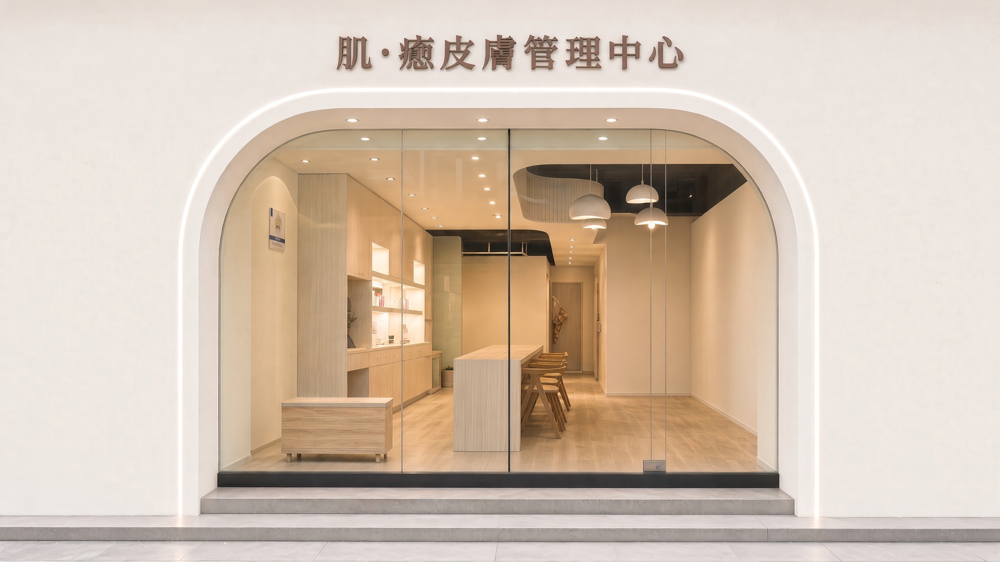
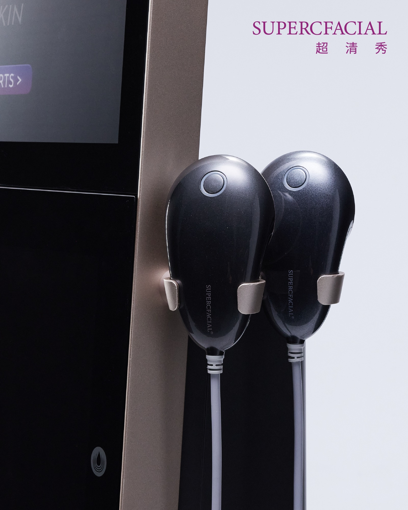

關於肌·癒 · About
先看懂肌膚，再決定如何照顧
肌·癒是位於台北中山的韓式皮膚管理中心。初次來店會先做肌膚檢測，了解當下的含水量、油脂與角質狀態，再安排適合的課程。敏感、粉刺、痘痘或暗沉，處理的順序與力道都不相同，我們只做肌膚當下需要的事。
- 形式
- 完全預約制
- 方式
- 初次來店先做肌膚檢測
- 地點
- 捷運中山站 2 號出口，步行五分鐘


肌·癒皮膚管理中心，台北中山的韓式皮膚管理
肌·癒是位於台北中山的韓式皮膚管理中心。初次來店會先做肌膚檢測，了解當下的含水量、油脂與角質狀態，再安排適合的課程。敏感、粉刺、痘痘或暗沉，處理的順序與力道都不相同，我們只做肌膚當下需要的事。
讓肌膚回到穩定的狀態，是一切保養的起點


「很有耐心的分析膚況還有適合的項目 不會強推 選擇最適合自己的方案 過程中也都不緊湊 很溫柔也很注重客人感受」
「療程開始前會先進行肌膚檢測，很細心專業的依照我的膚況進行療程的建議和保養說明！過程很舒服，連我最怕的清粉刺都不會太痛」
「敏感肌更要做好保養~ 這次做舒緩管理，過程中完全沒有刺激感，一點都不會不舒服」

